一次观察能留下什么？
穿戴、鞋内预载和活动任务都会影响读数。跨次复诊要比较患侧与对侧，先要知道每次数据如何采得。
INSOLE60智能鞋垫科研原型
面向足踝术后康复研究的双脚足底数字化检测系统，为足踝骨科、康复医学科医护及科研人员提供可重复、可比较、可回看的测量记录。
查看 PCB 与外壳设计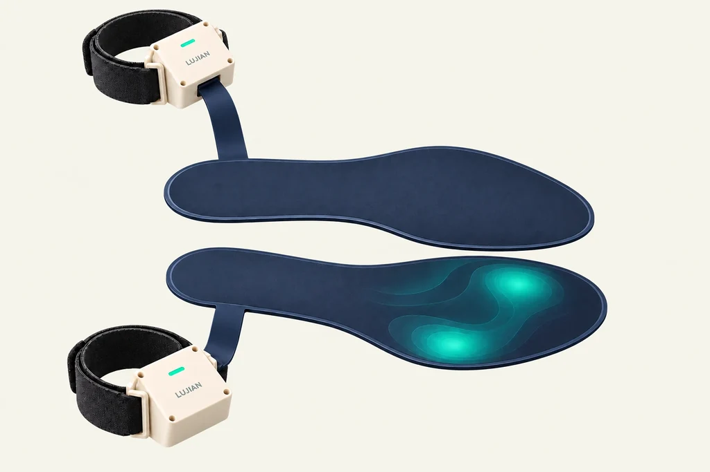
The making of LUJIAN
从 48 点阵列扫描，到双脚采集、电路修订、穿戴适配与数据验证。沿着研发路径，查看每一步留下的实物与记录。
左右滑动曲线 · 点选研发阶段
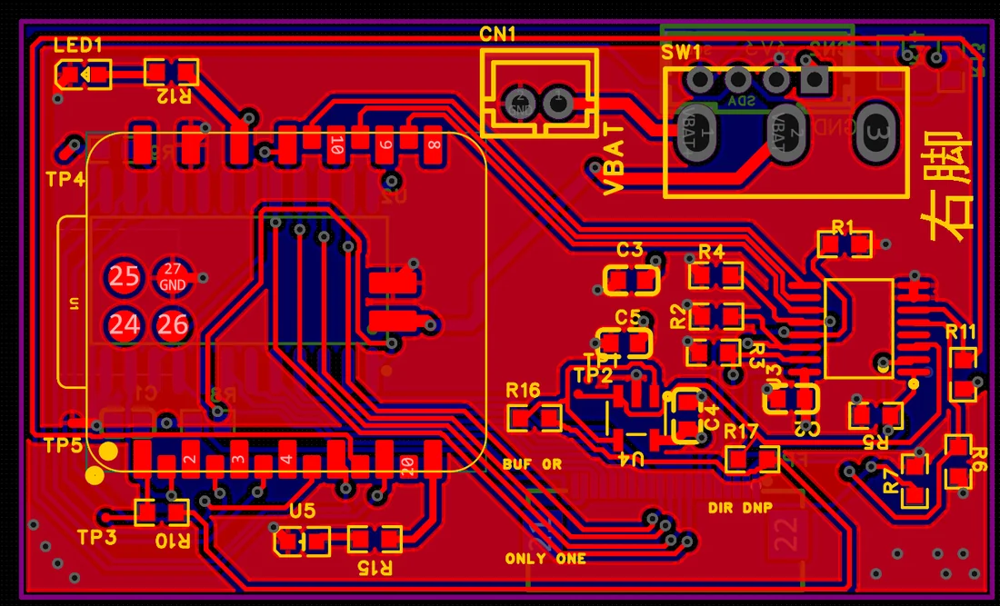
右脚 V3 迭代为自研四层采集板。加入缓冲／直通 A/B 路径，复核原理图、传感器接口与实际铜连接。
点击曲线节点，回看迭代
依据项目交接记录及 11.0 中期 PPT 第 4、6 页。曲线为阶段示意，各阶段的具体测量与可靠性按对应验证记录评价。
Inside the prototype
从板上的铜连接，到 FPC 出线口，再到能保存与回放的记录。每一次修订，都有对应的设计文件。
同板左右脚外壳 · 数字装配视图 · 点击查看大图
结构交付 · 2026.11.08
左右脚沿用同型号采集板，各有上盖与底座。根据 FPC 出线和固定需求修订开口，完成数字装配检查。
打印试装、真实排线应力与长时间穿戴固定。
Work behind the prototype
硬件、采集、算法、医工协作与软件并行推进。展开成员记录，查看本阶段的工作和下一步。
216.5小时
5 位成员 · 5 个工作方向
工时按 11.0 中期 PPT 第 11 页所列数值加总，覆盖该页阶段登记范围。详细依据为线序清单、编译与短测日志、质控记录、模型及交接资料。
联调 48 点采集、核对双脚线序，参与左板复焊与短时回读，交付四件外壳模型。
依据 · 线序清单、编译记录、短测日志、STEP 模型
下一步 试装新壳，复核独立供电与映射，开展双脚同步长时采集。
搭建串口解析与导出模块，检查分区按压与帧时序，编制采集执行表和操作规程。
依据 · 按压与帧日志、预采质控记录、操作规程
下一步 分点复测异常通道，开展志愿者重复性预试验。
核对 60 点映射，梳理基线、滤波与 COP 算法，复算压力和 IMU 数据，复核预采文件。
依据 · 算法说明、复算记录、预采质控
下一步 复核异常通道、验证重复性，确定扩采质控标准。
参与早期标定，整理接口交接、竞赛申报、伦理申请及医院沟通材料。
依据 · 标定记录、工程交接包、伦理与医院沟通材料
下一步 跟进伦理与医院合作，明确分工并修订采集方案。
复测早期采集与导出，核对双脚接入、任务标签、录制与回放，梳理小程序校准流程。
依据 · 显示回归、前端逻辑检查、小程序编译记录
下一步 复测手机与双设备 BLE 接入、重连、长时录制及保存。
Why LUJIAN
足踝术后复诊往往只在少数时点观察患者表现。履见探索在医嘱允许的活动范围内，记录双脚站立和步行时的足底响应与脚部运动。
穿戴、鞋内预载和活动任务都会影响读数。跨次复诊要比较患侧与对侧，先要知道每次数据如何采得。
按统一流程采集，保留试次及质控信息，再通过双脚热图和响应重心轨迹回看差异。
The System
柔性压阻阵列与踝侧采集盒记录足底响应和脚部运动。电脑科研端面向采集与回看，微信小程序支持移动采集开发与验证。
柔性阵列
DO-P6002 柔性压阻鞋垫贴合鞋内，左右脚分别输出 60 个有效测点的响应。
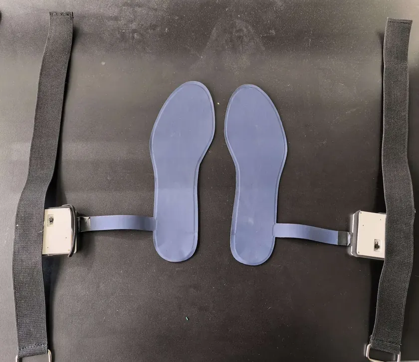
V3 采集硬件
自研四层板采用 XIAO nRF52840 Sense Plus，支持 USB 和 BLE。左右脚使用同型号板卡，配套 3D 打印外壳已完成数字装配检查。
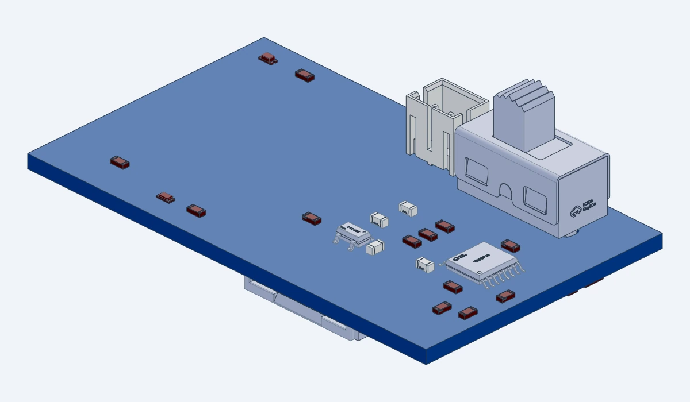

电脑科研端
支持 2D / 3D 压力热图、响应重心（COP）轨迹、相对压力时间积分（PTI），以及采集质控和记录回放。
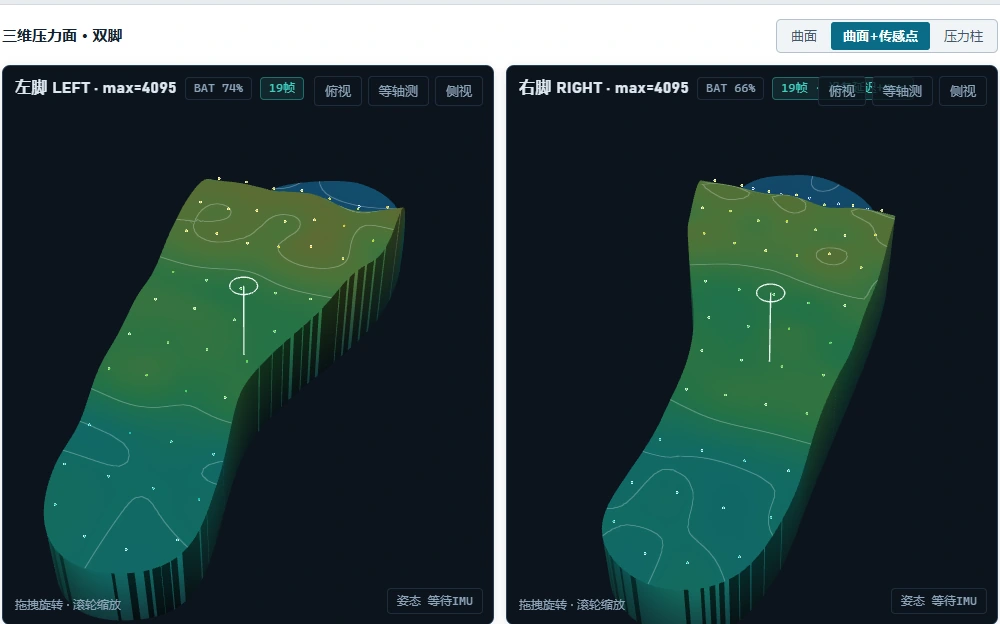
微信小程序
已实现双设备 BLE 接入逻辑、实时热图界面和本地 CSV 导出。
手机与双实物设备联调待验收。
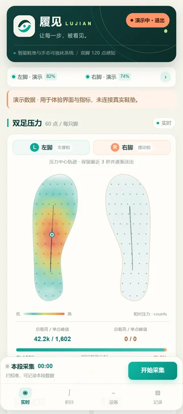
Prototype Gallery
柔性鞋垫放入鞋内，采集盒固定于踝侧。通过样机照片和概念图，可以查看佩戴方式与结构迭代。
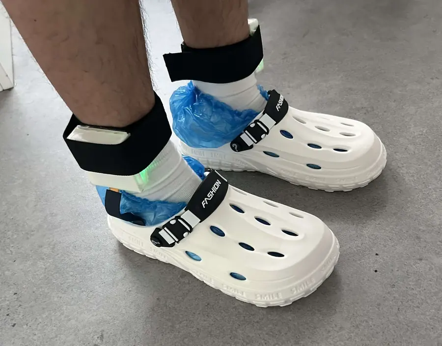
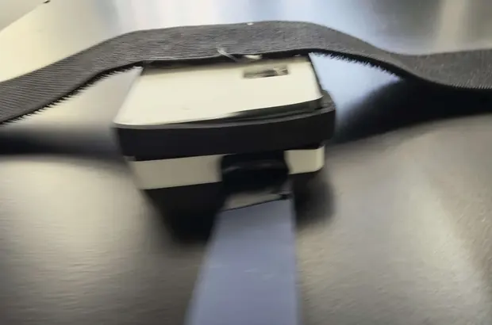
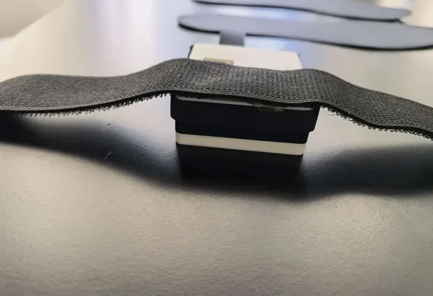
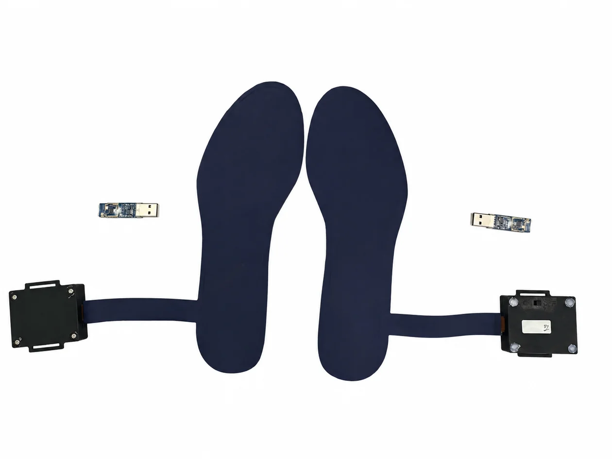
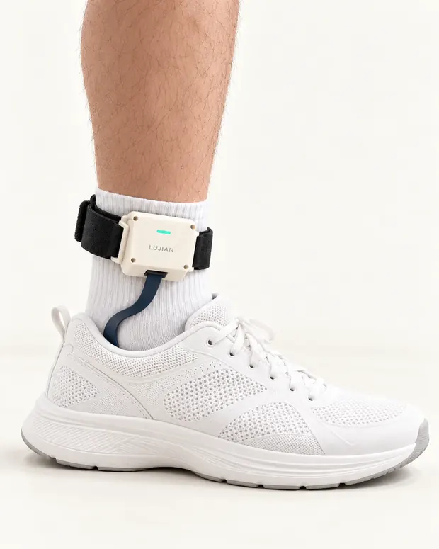
Engineering Validation
以双脚压力的波动与相邻帧变化为特征，使用逻辑回归分类。验证按采集编号整组留一。
站立 34 段、步行 35 段。同段窗口的步行概率取均值，再按 0.50 阈值判定。
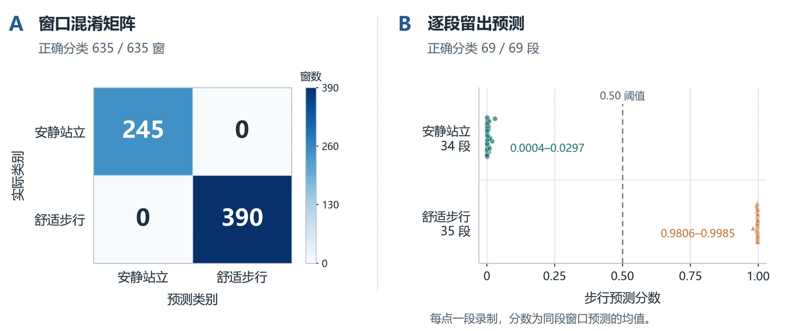
10 个归档采集对象，69 段记录（站立 34 段、步行 35 段）；整段判定 69 / 69。
9 个采集组，68 段有效配对记录（站立 33 段、步行 35 段）；整段判定 68 / 68。
来源：11.0 中期 PPT 第 6 页。两套模型均按采集组留出评估；在同一批 622 个配对窗口上，压力模型与融合模型均判对，当前样本尚不能证明加入 IMU 带来额外分类收益。临床及自由活动泛化仍待验证。
Research Roadmap
后续计划依据 11.0 中期 PPT 第 13 页。按设备验证、伦理及院方准入进度推进，逐步建立可复测的研究流程。
冻结样机版本，验证映射、穿戴固定、双脚采集与保存。
推进健康志愿者重复测量；患者先导采集以伦理及院方准入为前提。
复核统计结果，整理研究报告、论文和专利申请材料。
完成结题材料、成果汇报及工程资料归档。
医工协作进展
团队已与院方康复医学科交流并形成研究方案和样机评审资料。首批患者研究仍待设备验证、院方准入及伦理条件落实。
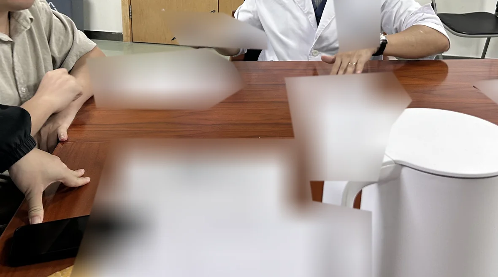
Team & Recognition
深圳技术大学健康与环境工程学院大创团队
第十一届全国大学生生物医学工程创新设计竞赛
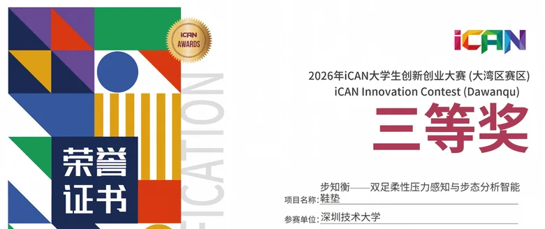
iCAN 大学生创新创业大赛
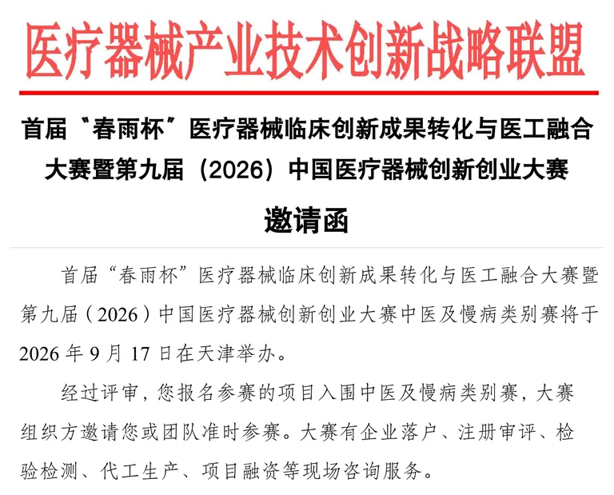
首届「春雨杯」医工融合大赛暨第九届中国医疗器械创新创业大赛，中医及慢病类别赛
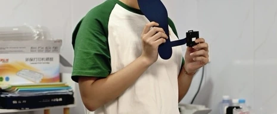
团队为智能鞋垫展示准备了海报和易拉宝。
校方推荐入库，市级正式通知待核。
已形成参展材料，拟于 11 月 26–28 日参展。
指导教师李贵叶、陈玲玲